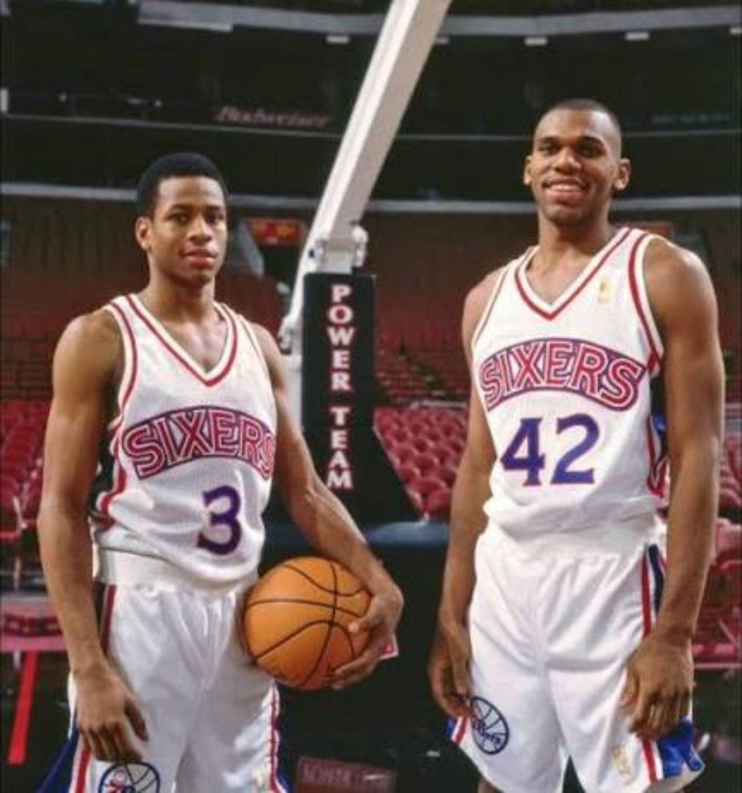
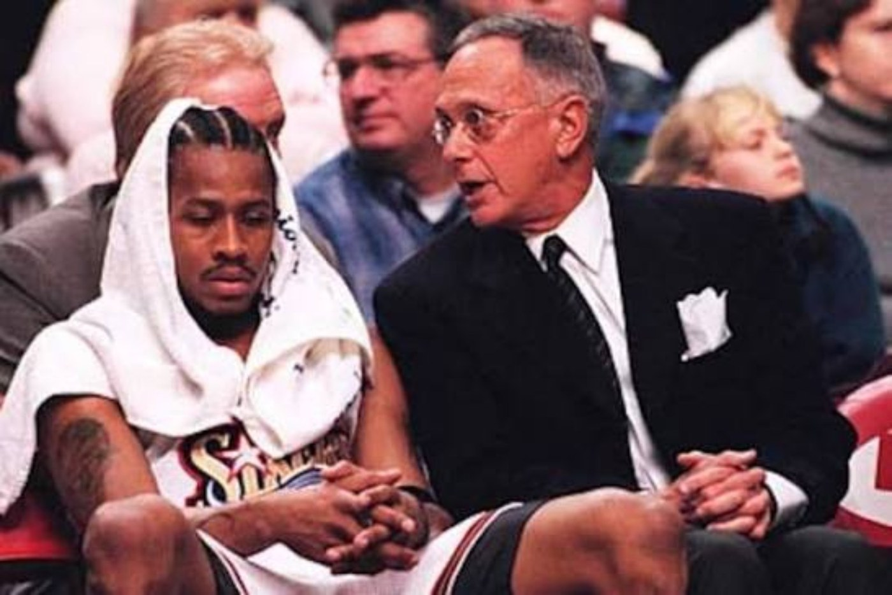
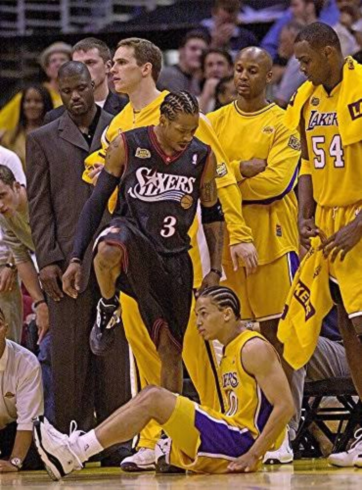
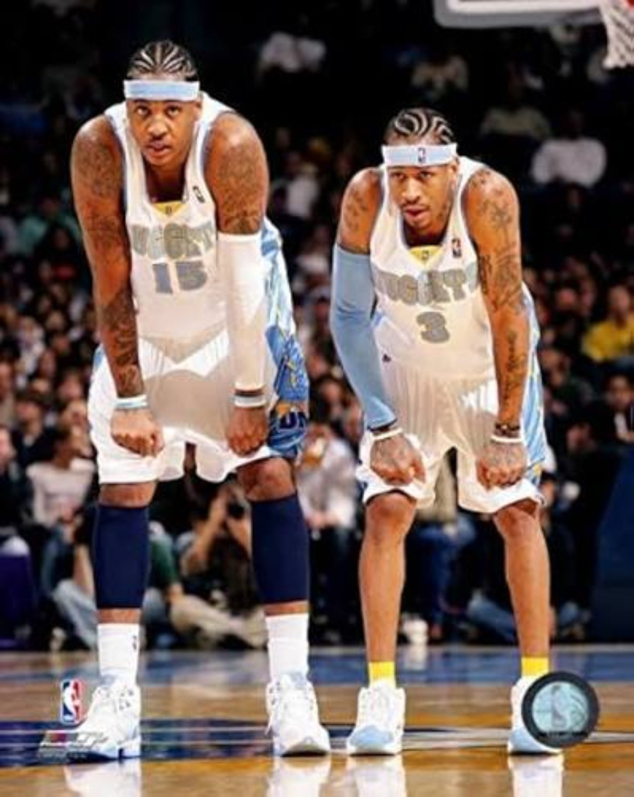

Allen Iverson did not need a championship ring to become permanent. The career created enough basketball evidence on its own: 26.7 points and 6.2 assists per game, four scoring titles, 11 All-Star selections, an MVP and nearly 30 points per game in the playoffs. The cultural impact made the résumé larger, not legitimate.
01. THE IT FACTOR SHOWED UP BEFORE THE WINNING.
The rookie season was not efficient and Philadelphia was not good. None of that hid the obvious. Iverson walked into the NBA at 21 years old and immediately looked different. He averaged 23.5 points and 7.5 assists for a 22-win team, attacked bigger defenders without hesitation and turned ordinary possessions into events.
Jerry Stackhouse was there too, giving the Sixers another young scorer and making that first version of the backcourt fun even when the results were not. The problem was timing. Both were young. The roster lacked the veteran structure that would come later. Talent existed before direction did.

The Jordan crossover became immortal because Michael Jordan was the defender, but the move was already Iverson's weapon. Scott Brooks, Greg Anthony and plenty of other guards had already seen that change of direction. Jordan simply became the most famous victim. The crossover mattered as much for the attitude as the footwork: a rookie facing the game's biggest icon and playing the possession like the hierarchy did not matter.
Then came the five straight 40-point games in April, a rookie record that included 50 against Cleveland. The streak did not reveal that Iverson could be special. Game 1 had already made that clear. The streak showed how high the ceiling could reach.
The efficiency could come later. The IT factor was already there.
02. HE DIDN'T NEED TO BE “FIXED.” HE NEEDED TO GROW — AND THE TEAM NEEDED TO MAKE SENSE.
The easy version of the Larry Brown story says a demanding coach arrived and fixed a wild young star. The better version is messier. Iverson had to mature, Brown had to learn how to deploy him, and Philadelphia had to construct a roster that gave the structure a reason to matter.

The Stackhouse pairing eventually ran its course. Aaron McKie and Theo Ratliff arrived. Eric Snow became exactly the type of point guard Iverson needed: a low-maintenance initiator who did not need shots to matter. Snow could organize the offense, handle bigger guards and let Iverson attack from different starting points.
Taking some initiation responsibility away from Iverson opened the game. He could run off screens instead of creating every possession from a standstill. He could catch on the move. Defensively, he had more freedom to roam, jump passing lanes and turn steals into instant offense.
03. 1999 WAS THE BREAKTHROUGH. 2000 WAS THE CONFIRMATION.
The second season can disappear in the larger Iverson mythology because the numbers slipped from the rookie year and parts of the legendary 1996 draft class were already collecting All-Star appearances or playoff experience. The transition was not linear.
The lockout-shortened 1998–99 season changed the direction. Iverson led the league at 26.8 points per game, made First Team All-NBA and reached the playoffs for the first time. No All-Star Game was played that season, which helps explain why the year can feel less visible than it should.
That was the breakthrough, not the final superstar stamp. The confirmation came in 1999–2000: 28.4 points per game, an All-Star appearance, 49 wins and a second straight trip to the second round. By then, Iverson belonged in any serious discussion of the league's top players.

04. 2001 WAS THE YEAR EVERYTHING LINED UP.
Peak team success is not always the same thing as peak individual ability. For Iverson, 2000–01 was the season when talent, maturity, coaching and roster construction finally hit at the same time.
Iverson averaged 31.1 points, led the league in scoring and steals, and powered Philadelphia to 56 wins and the East's best record. Brown had veteran role players who understood exactly what their jobs were. Snow handled point-guard responsibility. McKie could create and defend. George Lynch and Tyrone Hill brought toughness and dirty work.
Then the Mutombo trade put the roster over the top. Philadelphia had already been a contender; adding one of the league's defining interior defenders gave Brown another way to survive games when the offense became Iverson against the world.
The awards tell the story of how complete that ecosystem became: Iverson won MVP, Larry Brown won Coach of the Year, Aaron McKie won Sixth Man of the Year and Dikembe Mutombo won Defensive Player of the Year. Iverson also took All-Star Game MVP. This was not a superstar dragging random bodies to June. It was a defense-first veteran team built to let one singular offensive engine be singular.
05. THE PLAYOFF RUN WAS A FIGHT EVERY ROUND.
By the postseason, a Finals run was realistic. Indiana had taken a step back from its 2000 form, Philadelphia had added Mutombo, and the Sixers had spent an entire season proving they could win ugly.
Toronto turned the second round into star warfare. Iverson scored 54 in Game 2. Vince Carter answered with 50 in Game 3. The series stretched to seven games and came down to the final possession. Then Milwaukee brought a different kind of pressure. Ray Allen, Sam Cassell and Glenn Robinson formed a legitimate three-headed offense, and the Eastern Conference finals became a seven-game dog fight.
That run also strengthens the case for Brown's 2001 work. Injuries, role players, a deadline star acquisition and an offense built around one small guard had to be managed across two straight seven-game series.
Then came Los Angeles. The Lakers entered the Finals 11–0 in the postseason. Iverson dropped 48 in Game 1, hit the shot over Tyronn Lue and delivered the stepover that became one of the defining images of the era. Philadelphia stole the opener. The series never became a real coin flip. Shaq and Kobe were too dominant, and Los Angeles won the next four to finish the playoffs 15–1.

06. 2001 WAS PEAK “ANSWER.” 2006 MAY HAVE BEEN PEAK ALLEN IVERSON.
The MVP season owns the team-success argument. The individual-player argument is more complicated. By 2005–06, Iverson was 30 years old, more seasoned and still carrying extreme offensive responsibility. He averaged 33.0 points and 7.4 assists while shooting 44.7 percent from the field.
That version had more control than the rookie and more scoring polish than the first MVP years. The team did not match the player. Philadelphia finished 38–44 and missed the playoffs.
Chris Webber still produced numbers, but the knee injuries had already changed the player who once dominated Sacramento possessions with mobility, explosion and playmaking from the elbows. The name sounded like the co-star Iverson had needed for years. The timing did not.
07. DENVER WASN'T A FAILURE. THE CLOCKS JUST DIDN'T MATCH.
The Iverson-Carmelo Anthony pairing made sense. The talent was real. The timing was uneven.
Iverson was already in his early 30s when the trade happened. Melo was 22 and still growing into the responsibilities that came with being a franchise centerpiece. The trade even landed while Anthony was serving the suspension from the Madison Square Garden brawl.
The full 2007–08 season together was not bad basketball. Denver won 50 games. Iverson averaged 26.4 points and 7.1 assists. In most seasons, 50 wins buys a favorable playoff position. In the 2008 West, it bought the eighth seed and a first-round date with a Lakers team that had Kobe Bryant and, by then, Pau Gasol.

The sweep made the experiment look worse than the regular season actually was. The pairing had enough offense to win plenty. It never had enough time, maturity alignment or conference margin to become something bigger.
08. DETROIT WAS THE BEGINNING OF THE END.
The Chauncey Billups trade became the dividing line. Iverson landed with a Detroit group that still had famous names, but the championship version of that core had already aged. Rasheed Wallace, Rip Hamilton and Tayshaun Prince were no longer the same collective force, while Rodney Stuckey was being pushed toward a larger role.
That situation was never built for a graceful late-career transition. The role changed, the roster changed and the physical margin that had allowed a six-foot guard to live in traffic for more than a decade had started shrinking.
Memphis lasted only three games and is easy to forget, especially because the Grizzlies took off with their younger core after that chapter. The return to Philadelphia carried emotion, but the decline was visible. Those stops belong in the archive because endings matter, not because they redefine the prime.
09. THE “SELFISH SCORER” LABEL MISSES THE JOB DESCRIPTION.
Iverson's efficiency is fair basketball discussion. The shot volume was enormous. Some possessions were difficult by choice. None of that requires pretending the context did not exist.
Philadelphia did not spend Iverson's prime pairing him with another in-his-prime 25-point scorer and then watch him refuse to share. The best Sixers teams were built around defense, rebounding, toughness and role definition. That construction created a simple offensive reality: Iverson was the Answer because the offense needed an answer.
The bad-teammate label also becomes too convenient. Brown and Iverson clashed publicly, sometimes loudly. Practice became part of NBA history. Conflict with a coach is not the same as isolation from a locker room. The relationships with teammates, the loyalty many former teammates still show and the way veteran groups rallied around the 2001 run complicate the caricature.
VOLUME IS NOT AUTOMATICALLY SELFISHNESS.
On those teams, the shot creation was a responsibility. The offense was designed around Iverson doing more because few teammates could create the same pressure.
10. IVERSON IS THE KULTURE.
This is where the résumé stops being enough.
The braids. The tattoos. The arm sleeve. The Reebok Questions and Answers. The headbands. The hip-hop connection. The clothes. The willingness to show up as himself even when the league preferred something cleaner, quieter and easier to market.
The sleeve is the perfect symbol because the influence was not even born as a branding strategy. Iverson began wearing a compression sleeve while dealing with elbow problems, and the look became part of basketball's permanent visual language. More than two decades later, sleeves are normal equipment from youth gyms to the NBA.
Kobe Bryant reached the broadest version of basketball celebrity in that generation. Iverson's connection was different. His style felt closer to the people basketball culture was already becoming. Hip-hop did not sit next to his image as a promotional accessory. It felt embedded in it.
11. THE BASKETBALL CASE STANDS WITHOUT THE CULTURE.
The cultural influence should never become a shortcut that minimizes the player. Iverson finished his NBA career at 26.7 points and 6.2 assists per game. In 71 playoff games, the averages jumped to 29.7 points and 6.0 assists. Add 11 All-Star selections, seven All-NBA selections, four scoring titles, three steals titles, Rookie of the Year and the 2001 MVP.
That is a top-10 guard résumé without mentioning a hairstyle, a shoe or a crossover highlight. The 4DK case places him in the top-seven guard conversation. The exact slot can be debated. The tier should not require cultural bonus points.
THE CULTURE DIDN'T MAKE IVERSON GREAT.
GREATNESS GAVE THE CULTURE A PLATFORM.
Allen Iverson influenced a generation because elite basketball made every other part of the package impossible to dismiss. The league eventually adopted pieces of the look, the sound and the attitude. The game had already forced everyone to watch.
SOURCES / RECORD
Career and season statistics: NBA.com and Basketball-Reference. Historical season and award context: NBA.com. Philadelphia franchise history: Philadelphia 76ers/NBA.com.
NBA — Archive 75: Allen Iverson • NBA — Iverson career statistics • NBA — 2001 MVP • NBA — 2000–01 season review • 76ers — franchise history • Basketball-Reference — Iverson
002 • THE LEAGUE KNEW FROM GAME 1.
The full rookie deep dive: Stackhouse, 23 and 7, the Jordan crossover and the five straight 40-point games.
BACK TO THE ANSWER FILES →